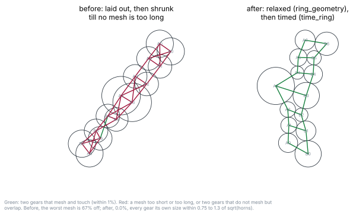
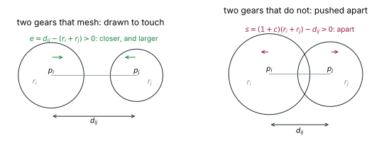
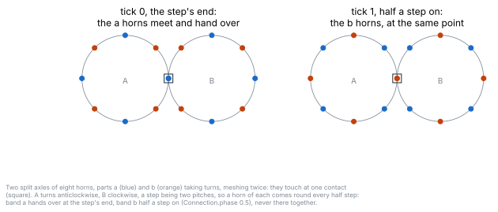
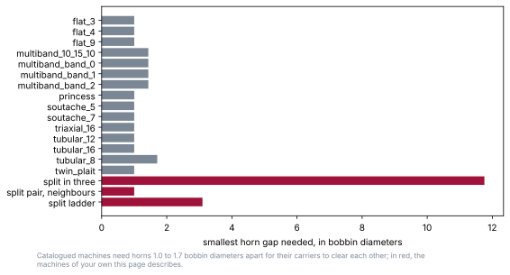

Laying out a horn gear machine
A horn gear machine is written as the gears that mesh
(braidpy.horn_gear.described). Which slots meet is all the simulation
needs, but everything drawn and laid from it — where each carrier is, the
yarns it lays, the braid word read from them — comes from where the gears
stand and how large they are. This page says how braidpy places them in a
machine whose gears make rings, as a matrix of gears does, when each contact
hands over, and how large a machine must be for its bobbins.
Gears that mesh touch, no others overlap
Gear \(i\) stands at \(p_i\) and is drawn with radius \(r_i\), by convention
\(\sqrt{h_i}\) for \(h_i\) horns (gear_radii()),
a convention for drawing and not a constraint of the machine. Two gears that
mesh should just touch, and two that do not should stay clear of each other:
with \(c\) = CLEARANCE = 0.1, room for the carriers going by.
A chain or a tree of gears is placed gear by gear, each mesh exact. A single ring of gears alike, as a tubular braider is, is a regular polygon, also exact. A ring of gears of several sizes, or rings sharing gears, can rarely be both. The graph used to be laid out with a spring layout (Kamada–Kawai where SciPy is installed) aiming each mesh at \(r_i + r_j\), then shrunk until no mesh was longer than that. Every other mesh then came out shorter: gears ran through each other.

Relaxing the layout
ring_geometry() starts from that layout,
unshrunk, and relaxes it a round at a time.

For each pair of meshing gears, the error and the unit vector between them are
A share \(1 - \gamma\) of the error moves the centres, half each, and \(\gamma\)
(RADIUS_GIVE = 0.2) grows or shrinks the radii:
For each pair that does not mesh but is too close,
All pairs are taken at once, each gear moved by the mean of what its pairs
ask. Each radius stays within RADIUS_RANGE, 0.75 to 1.3 times its
convention: sizes change only as far as needed for the gears to touch. It
stops when the worst error,
as a share of the length it should be, is under RELAX_TOLERANCE (0.1%), or
after RELAX_ROUNDS.
A start can fold a ring into a bow-tie, two of its sides crossing, which no
relaxing undoes. So it is relaxed from several starts — the spring layout, a
planar one where the gears can be drawn without crossing, and SPRING_STARTS
more spring layouts — and the best is kept. A layout already within the
tolerance is kept as it is, so a tubular braider does not move. It is not an
exact solution, only one with no gear through another.
Every contact on a horn
A gear turns one slot a step, so a horn of it comes round to each of its contacts once a step. Where every contact of a gear is a whole number of slots from the others, as round a ring of four gears, a turning puts a horn on each at the end of every step, and they all hand over then. Often none does:
round a ring of six or eight gears of four slots, a gear’s two contacts are \(180 - 360/N\) = 120 or 135 degrees apart, its horns 90;
in a matrix of gears, the angles at the corners of a square, each a whole number of slots, have to add up to a turn: on the split ladder’s squares of 3- and 4-slot gears they add up to \(90 + 120 + 120 + 90 = 420\) degrees.
So each contact hands over when a horn of each of its two gears comes round
to it, a fraction of a step in
(Connection’s phase). Gear \(u\), of \(n_u\)
slots a part, turning \(d_u = \pm 1\) and turned \(\psi_u\) to start with,
brings its part \(p_u\) of \(k_u\) to a contact at angle \(\alpha_u\) at the times
\(t\) with
Two gears hand over when their times agree. Written with \(x_u = d_u n_u \psi_u / 2\pi\), a contact between \(u\) and \(v\), where \(\alpha_v = \alpha_u + \pi\), asks
There is one \(x\) a gear and one equation a contact, so round each ring of
gears one equation is left over, and the layout has to meet it. Round a
single ring of gears alike it cancels: no gear moves.
time_ring() moves and sizes the gears
from the relaxed layout till every two that mesh touch, no two others come
within CLEARANCE, and every contact’s two horns arrive at once: a
least-squares fit of all three, by Levenberg–Marquardt with exact
derivatives. A ring whose whole-slot contacts miss their horns by more than
OFF_HORN is timed so (described). Its carriers
make the same braid; they are only drawn, and handed over, where the horns
are.
Two split axles meshing twice
Two split axles of \(h\) horns each, parts \(a\) and \(b\) taking turns round each,
meshing twice (A1-B1 A2-B2 A1+A2 B1+B2), touch at one contact, and their
parts’ \(p_u / k_u\) take them round to it in turn. A step turns
each part one of its slots, two pitches \(2\pi/h\) of the axle, the two axles
opposite ways, so a horn of each comes round to the contact every half step,
the parts in turn. A step is then two ticks, a pitch each: the \(a\) horns meet
at the contact and hand over at the end of the step, the \(b\) horns half a
step on, at the same point
(Connection’s phase). The two bands share
the contact, never there at the same time. With \(k\) parts a step is \(k\)
ticks.

Split gears in a timed ring
In a ring timed so, the parts of a split gear are stacked on their axle, each a horn plate of its own meeting only its own neighbours. Each keeps its own time, its own \(x\), its \(p_u / k_u\) then 0: its plate set on the axle where its contacts want it, as when the machine is assembled. The axle is as large as one part, not all of them. Where no contact ties two parts’ bands, as two matrices of gears joined by a column of split gears, each band is laid out alone first and the next turned, and mirrored if that leaves it clearer, so that the split axles it shares come where they stand; then each band’s times are shifted together, which changes none of its contacts, so that each split gear’s parts stand \(j / k\) of a pitch apart, their carriers out of each other’s way. Each band then braids as it does alone: two matrices of 14 carriers joined so hold 28.
How large a machine must be for its bobbins
The simulation stops a machine where two carriers would take one slot
(CollisionError). Two carriers in
different slots can still come close in space. Drawn larger, gear sizes and
places together, a machine keeps every two carriers further apart in
proportion, so any two that do not come to one point clear each other on a
machine large enough for its bobbins.
clearance() follows the carriers as they
are drawn and finds the closest two come, \(d\). Bobbins of diameter \(b\) clear
each other on the machine drawn \(b / d\) times as large, where the smallest
gap between two neighbouring horns of a gear,
(round a split gear whose parts take turns, all its parts’ horns count;
stacked, a part’s own), is \(g \, b / d\): \(g / d\)
bobbin diameters. Braid Studio sizes every machine so for bobbins of
bobbin_diameter_mm (20 unless the link says otherwise), and says how
large its horns, gears and deck come out.
Two carriers closer than MEET of \(g\) are at one point, as far as the
samples, CLOSEST_SUBSTEPS a step, can tell: they would hit on a machine of
any size, and the machine stops there
(too_close()). Machines driven by a card,
as lace machines are, swap two bobbins by passing one by the other, and are
not looked at.

A gear split in three meshing with ordinary gears brings a carrier leaving for a neighbour close by the next part’s horn coming round to the same contact: it has to be large for its bobbins, its horns about twelve bobbin diameters apart.